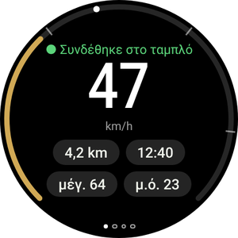
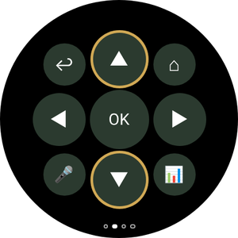
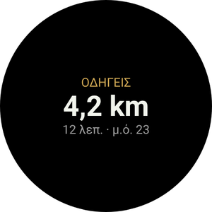
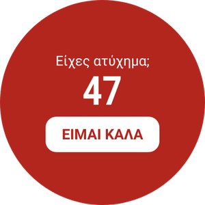
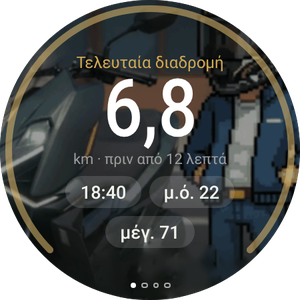
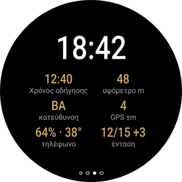

Η μοτοσικλέτα σου στον καρπό σου
Η εφαρμογή Wear OS είναι προαιρετική και λειτουργεί μαζί με την εφαρμογή του τηλεφώνου. Δείχνει την ταχύτητά σου και τον επόμενο ελιγμό, δονείται πριν από κάθε στροφή, σε οδηγεί πίσω στη σταθμευμένη μοτοσικλέτα και σου επιτρέπει να χειρίζεσαι το Android Auto στην οθόνη χωρίς να αγγίζεις το τηλέφωνο.
Δεν έχεις εγκαταστήσει ακόμη την εφαρμογή στο τηλέφωνο; Ξεκίνα από τον οδηγό κινητού.

Τι θα βλέπεις στο ρολόι






- Ρολόι με Wear OS 3 ή νεότερο: Galaxy Watch 4 και νεότερα, Pixel Watch και άλλα. Τα ρολόγια Huawei, Amazfit και Garmin δεν χρησιμοποιούν Wear OS και δεν υποστηρίζονται.
- Το ρολόι πρέπει να είναι ήδη συζευγμένο με το τηλέφωνό σου και RideScreen AA 2.2 ή νεότερη έκδοση εγκατεστημένο στο τηλέφωνο.
- Τηλέφωνο και ρολόι συνδεδεμένα στο ίδιο δίκτυο Wi‑Fi (για παράδειγμα, το οικιακό σου δίκτυο). Χρειάζεται μόνο για αυτή την εγκατάσταση.
- Περίπου 10–15 λεπτά. Η διαδικασία γίνεται μόνο μία φορά: οι επόμενες εκδόσεις εγκαθίστανται από το τηλέφωνο.
Εγκατάσταση της εφαρμογής στο ρολόι
Τα ρολόγια δεν ανοίγουν αρχεία APK όπως τα τηλέφωνα. Την πρώτη φορά χρειάζεται μια εφαρμογή στο τηλέφωνο που επικοινωνεί με το ρολόι μέσω Wi‑Fi (ασύρματος εντοπισμός σφαλμάτων). Ακούγεται τεχνικό, αλλά χρειάζονται μόνο λίγα πατήματα.
-
Λήψη του APK του ρολογιού στο τηλέφωνο
Πάτησε το κουμπί για να κατεβάσεις απευθείας το APK του ρολογιού (το αρχείο που τελειώνει σε WearOS-reloj.apk). Άφησέ το στον φάκελο Λήψεις.
Εγκατέστησε επίσης στο τηλέφωνο μία από αυτές τις εφαρμογές από το Play Store: Wear Installer 2 ή Bugjaeger.
Λήψη APK για το ρολόι -
Ενεργοποίηση επιλογών προγραμματιστή στο ρολόι
Galaxy Watch: Ρυθμίσεις → Πληροφορίες ρολογιού → Πληροφορίες λογισμικού → πάτησε Έκδοση λογισμικού 5 φορές.
Pixel Watch και άλλα: Ρυθμίσεις → Σύστημα → Σχετικά → πάτησε Αριθμός έκδοσης 7 φορές.
Θα εμφανιστεί μήνυμα ότι ενεργοποιήθηκαν οι επιλογές προγραμματιστή.
-
Σύνδεση του ρολογιού στο Wi‑Fi
Ρυθμίσεις → Συνδέσεις → Wi‑Fi: όρισε την επιλογή σε Ενεργό (όχι «Αυτόματα») και σύνδεσε το ρολόι στο ίδιο δίκτυο με το τηλέφωνο.
Αν αργότερα το ρολόι δεν εμφανίζει διεύθυνση IP, απενεργοποίησε για λίγο το Bluetooth του τηλεφώνου: το ρολόι χρησιμοποιεί Wi‑Fi μόνο όταν δεν μπορεί να επικοινωνήσει με το τηλέφωνο μέσω Bluetooth. -
Ενεργοποίηση ασύρματου εντοπισμού σφαλμάτων
Ρυθμίσεις → Επιλογές προγραμματιστή → ενεργοποίησε Εντοπισμό σφαλμάτων ADB και Ασύρματο εντοπισμό σφαλμάτων. Άνοιξε τον Ασύρματο εντοπισμό σφαλμάτων → Σύζευξη νέας συσκευής.
Το ρολόι εμφανίζει έναν 6ψήφιο κωδικό και μια διεύθυνση με θύρα, για παράδειγμα 192.168.1.40:37115.
Αύξησε πρώτα τον χρόνο μέχρι να σβήσει η οθόνη του ρολογιού: αν σβήσει κατά τη σύζευξη, ο κωδικός θα λήξει. -
Σύζευξη και εγκατάσταση από το τηλέφωνο
Άνοιξε Wear Installer 2 (ή το Bugjaeger), πληκτρολόγησε τη διεύθυνση και τον κωδικό σύζευξης και, στη συνέχεια, συνδέσου χρησιμοποιώντας τη διεύθυνση που εμφανίζεται στην οθόνη ασύρματου εντοπισμού σφαλμάτων.
Επίλεξε το …-WearOS-reloj.apk αρχείο από τις Λήψεις και εγκατέστησέ το. Σε περίπου ένα λεπτό, το RideScreen AA θα εμφανιστεί στο ρολόι.
Η θύρα για τη σύζευξη και η θύρα για τη σύνδεση είναι διαφορετικές. Αυτό είναι το συχνότερο λάθος. -
Άνοιξε την εφαρμογή και απενεργοποίησε τον εντοπισμό σφαλμάτων
Άνοιξε το RideScreen AA στο ρολόι και επέτρεψε την πρόσβαση στην τοποθεσία (για την πυξίδα προς τη μοτοσικλέτα σου) και στις ειδοποιήσεις.
Τώρα μπορείς να απενεργοποιήσεις τον ασύρματο εντοπισμό σφαλμάτων και το ADB: δεν χρειάζονται για τη χρήση ή την ενημέρωση της εφαρμογής.

Χειρισμός του Android Auto από το ρολόι
Η οθόνη της Zontes δεν είναι αφής. Με το ρολόι χειρίζεσαι το Android Auto όπως με ένα χειριστήριο αυτοκινήτου: έναν τροχό για μετακίνηση στην οθόνη και πλήκτρα για επιλογή, επιστροφή ή ομιλία με τον Βοηθό.
Το σταυροειδές χειριστήριο (σύρε προς τη δεύτερη σελίδα)
- ▲ ▼Σύντομο πάτημα: περιστρέφει τον τροχό του Android Auto και μετακινεί την επιλογή από στοιχείο σε στοιχείο. Παρατεταμένο πάτημα: λειτουργεί ως βέλος πάνω ή κάτω.
- ◀ ▶Τα βέλη αριστερά και δεξιά αλλάζουν στήλη ή καρτέλα.
- OKΕπιλογή του επισημασμένου στοιχείου.
- ↩Πίσω.
- ⌂Αρχική οθόνη Android Auto.
- 🎤Βοηθός Google («οδήγησέ με στο…», «βάλε μουσική»).
- 📊Επιστροφή στα δεδομένα διαδρομής.
Με περιστρεφόμενο στεφάνι ή κορώνα
Για Galaxy Watch Classic, Pixel Watch και ρολόγια με περιστρεφόμενη κορώνα.
- Περίστρεψε το στεφάνι ή την κορώνα για να μετακινείσαι στο Android Auto, όπως με τον τροχό ενός χειριστηρίου αυτοκινήτου. Λειτουργεί σε κάθε σελίδα του ρολογιού.
- Πάτησε OK στο σταυροειδές χειριστήριο για επιλογή.
- Στη σελίδα Διαδρομές το στεφάνι κάνει κύλιση στη λίστα αντί να χειρίζεται το Android Auto.
Χωρίς περιστρεφόμενο στεφάνι
Για τα συνηθισμένα Galaxy Watch (4, 5, 6, 7…) και ρολόγια με επίπεδη οθόνη.
- The ▲ ▼ τα κουμπιά ▲ ▼ στο σταυροειδές χειριστήριο λειτουργούν ως τροχός: ένα πάτημα, ένα βήμα.
- Κράτησέ τα πατημένα όταν χρειάζεσαι κανονικό βέλος, για παράδειγμα για να πας προς τα πάνω σε μια λίστα.
- Στα Galaxy Watch με αφής, ενεργοποίησέ το στις ρυθμίσεις του ρολογιού και σύρε το δάχτυλο γύρω από το άκρο της οθόνης σαν να ήταν περιστρεφόμενο στεφάνι.
Οι σελίδες της εφαρμογής
Σύρε αριστερά και δεξιά. Οι κουκκίδες στο κάτω μέρος δείχνουν σε ποια σελίδα βρίσκεσαι.

Ενεργοποίηση δονήσεων
Κατά την πλοήγηση με Android Auto, το ρολόι δονείται πριν από κάθε ελιγμό: 2 σύντομες δονήσεις για αριστερά, 3 για δεξιά, μία παρατεταμένη και N σύντομες για την έξοδο N από κυκλικό κόμβο και δύο παρατεταμένες για αναστροφή.
Ενεργοποίησέ το στην εφαρμογή του τηλεφώνου: ⚙️ Ρυθμίσεις → Πρόσθετες λειτουργίες διαδρομής → Δονήσεις στο ρολόι πριν από τις στροφές. Η λειτουργία είναι πειραματική.
Πλακίδιο και ένδειξη καντράν
Πρόσθεσε το πλακίδιο Διαδρομή (σύρε από την πρόσοψη του ρολογιού και πάτησε +) για να δεις την τρέχουσα διαδρομή ή πού πάρκαρες. Η ένδειξη RideScreen · km εμφανίζει τα χιλιόμετρα της διαδρομής στην πρόσοψη του ρολογιού.
Ενημέρωση του ρολογιού
-
Από το τηλέφωνο, χωρίς υπολογιστή
Από την έκδοση 2.2, όταν κυκλοφορεί νέα έκδοση, στο τηλέφωνο άνοιξε ❓ Βοήθεια → ⌚ Ενημέρωση εφαρμογής ρολογιού → Τελευταία έκδοση.
Το τηλέφωνο κατεβάζει την εφαρμογή του ρολογιού και τη μεταφέρει μέσω Bluetooth. Χρειάζονται λίγα λεπτά: θα βλέπεις την πρόοδο στο τηλέφωνο και στο ρολόι. Όταν ολοκληρωθεί, πάτησε Εγκατάσταση στο ρολόι.
Την πρώτη φορά, το ρολόι θα ζητήσει να επιτρέψεις στο RideScreen AA να εγκαθιστά εφαρμογές. Ενεργοποίησε την άδεια και επέστρεψε.
Συνηθισμένα προβλήματα
Το ρολόι δεν εμφανίζει διεύθυνση IPΚατά την ενεργοποίηση του ασύρματου εντοπισμού σφαλμάτων
- Όρισε το Wi‑Fi του ρολογιού σε Ενεργό, όχι «Αυτόματα», και σύνδεσέ το στο ίδιο δίκτυο με το τηλέφωνο.
- Απενεργοποίησε για λίγο το Bluetooth του τηλεφώνου ώστε το ρολόι να περάσει στο Wi-Fi. Ενεργοποίησέ το ξανά όταν τελειώσεις.
Το Wear Installer δεν συνδέεταιΚατά τη σύζευξη
- Χρησιμοποίησε τη θύρα από το παράθυρο Σύζευξη νέας συσκευής για τη σύζευξη και τη θύρα της κύριας οθόνης Ασύρματου εντοπισμού σφαλμάτων για τη σύνδεση. Είναι διαφορετικές.
- Αν ο κωδικός έληξε, πάτησε ξανά «Σύζευξη νέας συσκευής» για να πάρεις καινούριο.
«Το πακέτο φαίνεται μη έγκυρο»Κατά την εγκατάσταση
Πιθανότατα κατέβασες το APK του τηλεφώνου. Για το ρολόι χρειάζεται το αρχείο που τελειώνει σε WearOS-reloj.apk.
Το ρολόι εμφανίζει «Δεν υπάρχουν δεδομένα από το τηλέφωνο»Μετά την εγκατάσταση της εφαρμογής
- Άνοιξε το RideScreen AA στο τηλέφωνο τουλάχιστον μία φορά και βεβαιώσου ότι το ρολόι είναι συνδεδεμένο με το τηλέφωνο μέσω Galaxy Wearable ή της εφαρμογής Pixel Watch.
- Η εφαρμογή τηλεφώνου και η εφαρμογή ρολογιού πρέπει να προέρχονται από την ίδια σελίδα λήψης. Δεν λειτουργούν με την έκδοση του Play Store ή την αρχική έκδοση του OpenCfMoto.
«⚠️ Εκκίνησε τον διακομιστή AA»Στη σελίδα διαδρομής
Ο διακομιστής κεντρικής μονάδας του Android Auto είναι απενεργοποιημένος στο τηλέφωνο. Στο Android Auto: ⋮ → Έναρξη διακομιστή κεντρικής μονάδας (βήμα 6 του οδηγού κινητού).
«Αυτό το ρολόι δεν επιτρέπει στις εφαρμογές να εγκαθιστούν ενημερώσεις»Κατά την ενημέρωση από το τηλέφωνο
Το ρολόι δεν επιτρέπει σε μια εφαρμογή να εγκαταστήσει μια άλλη. Εγκατάστησε τη νέα έκδοση όπως την πρώτη φορά (Μέρος 1).
Τίποτα από τα παραπάνωΠώς να ζητήσεις βοήθεια
Στο τηλέφωνο πάτησε ❓ Βοήθεια → Κοινή χρήση αρχείων καταγραφής και στείλε τα στην ομάδα, αναφέροντας τα μοντέλα του ρολογιού και του τηλεφώνου σου.
Το RideScreen AA είναι δωρεάν λογισμικό ανοικτού κώδικα, βασισμένο στο OpenCfMoto του Alexandru (zanderp). Δεν είναι επίσημη εφαρμογή της Zontes ή της Google. Τα στιγμιότυπα είναι ενδεικτικά· οι ακριβείς ονομασίες ρυθμίσεων μπορεί να διαφέρουν ανάλογα με το ρολόι. · Οδηγός κινητού